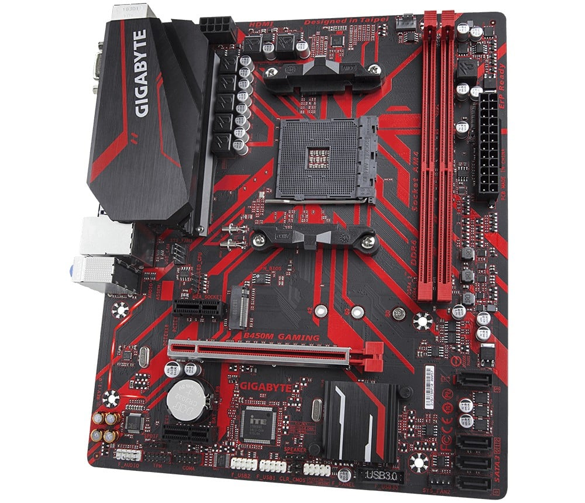
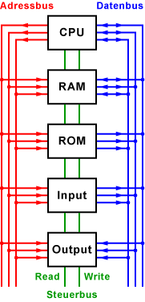
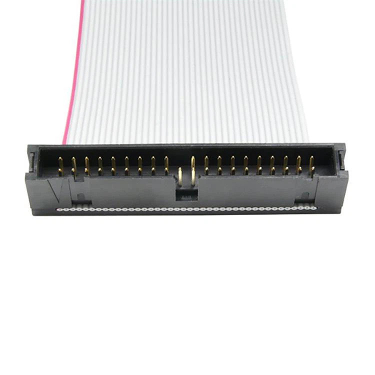
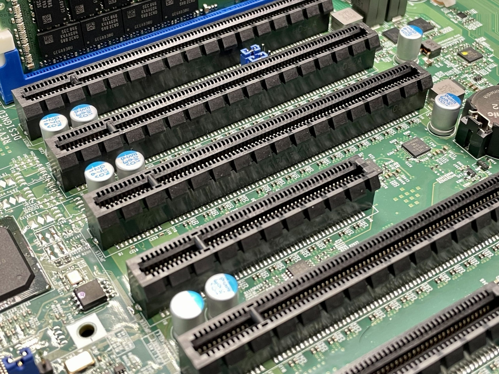

6 Beispiele
6.1 PATA
Motherboards verbinden alle Bestandteile eines PCs mittels verschiedener Busarten
Ein Bus ist ein System, welches Daten zwischen Computergeräten überträgt. Busse beinhalten sowohl Hardware als auch Software, wie Kommunikationsprotokolle. Busse erlauben es verschiedenen Geräten über den gleichen Pfad, wie Kabel oder Mikrochips, zu kommunizieren, Busse verwenden Datenprotokolle um Übertragungsfehler zu vermeiden und zu steuern welches Gerät zu einem gegebenen Zeitpunkt Daten übertragen kann.
Man unterscheidet zwischen verschiedenen Arten von Bussen, dazu zählen unter anderem: Datenbusse, welche Daten zwischen Computergeräten und dem Speicher übertragen, Adressbusse, die Speicheradressen an verschiedene Computergeräte leiten, Steuerbusse, die die Befehle an die Computergeräte leiten, und Universal Serial Bus (USB), welcher externe Geräte verbindet. Es existieren parallele sowie seriale Busse, welche komplexe Kodierungsmethoden verwenden um Geschwindigkeit und Effizienz zu erhöhen.
Der Datenbus dient der Übertragung von Daten zwischen Digital-, Computer-, und Speichergeräten. Anders als bei konventionellen Verbindungen bei denen zwei Geräte mit einem Anschluss verbunden werden, kann ein Datenbus mehrere Peripheriegeräte über die gleiche Leitung verbinden. Im Gegensatz zum Steuer- und Adressbus ist der Datenbus bidirektional, das bedeutet, er hat die Fähigkeit Daten in beide Richtungen zu übertragen. Die Ausdrücke 4-Bit, 8-Bit, 16-Bit, 32-Bit und 64-Bit geben die Breite des Datenbuses an, viele Grafikkarten verfügen über noch höhere Busbreiten, um den Verarbeitungsprozess zu beschleunigen.
Der Adressbus dient zur Übertragung von Speicher- und Peripherieadressen zwischen dem Prozessor und allen Speichergeräten. Wenn der Prozessor vom Speicher lesen muss spezifiziert er die Speicheradresse im Adressbus, der Speicherwert wird dann über den Datenbus geleitet. Die Breite des Adressbuses bestimmt die Menge an Speicher die ein System erreichen kann, ein System mit 2^32 Bit breitem Bus kann somit 4.294.967.296 Speicheradressen ansteuern.
Der Adressbus dient zur Übertragung von Speicher- und Peripherieadressen zwischen dem Prozessor und allen Speichergeräten. Wenn der Prozessor vom Speicher lesen muss spezifiziert er die Speicheradresse im Adressbus, der Speicherwert wird dann über den Datenbus geleitet. Die Breite des Adressbuses bestimmt die Menge an Speicher die ein System erreichen kann, ein System mit 2^32 Bit breitem Bus kann somit 4.294.967.296 Speicheradressen ansteuern.

Steuerbus, Adressbus, und Datenbus und ihre verbindungen zu Computerteilen
Der Steuerbus überträgt gewisse Signale an die einzelnen Komponenten eines Computers um diesen Instruktion zuzuteilen, er beinhaltet zudem die Interrupt-Leitungen über den Peripherie-Geräte dem Prozessor Unterbrechungsanforderungen zugeteilt werden können. Der Steuerbus leitet die Befehle um aus dem RAM zu lesen und zu schreiben, Eingabe und Ausgabe von Peripherie-Geräten sowie die Interrupt-Signale für die CPU.
Viele ältere Computersysteme verwenden in ihren Bussen für jedes Bit ein einzelnes Kabel, diese Methode ist sicher und unkompliziert, jedoch sind Busse mit größeren Breiten demnach physisch ebenfalls sehr groß, daher verwenden moderne Computer ein bidirektionales System aus Datenbussen um die Signale aller Busse durch einen einzelnen kleineren Bus zu leiten. Ein System-Timer stellt sicher, das nur ein Gerät auf einmal Signale sendet und nur die passenden Geräte diese Signale verwenden.

Ein gewöhnliches Pata Kabel mit 39 Pins
Parallel Advanced Technology Attachment(PATA) ist ein Computer-Interface für die Datenübertragung zwischen Motherboard und Festplatten bzw. CD und DVD Laufwerken. PATA Kabel sind flach mit 40-pin Konnektoren, ein Ende des Kabels wird an dem Motherboard angeschlossen und das andere Ende mit einem Speichergerät. PATA Kabel übertragen zwischen 33 und 100 MB/s. Nach der Einführung des SATA (Serial Advanced Technology Attachment) Kabel Standards wurde PATA über Zeit mit diesem ersetzt.

Verschiedene PCIe anschlüsse auf einem Motherboard
Peripheral Component Interconnect Express (PCIe) ist ein Hochgeschwindigkeitsstandard für die Verbindung von Hardware Geräten innerhalb eines Computers. PCIe Busse übertragen Daten über sogenannte "Lanes", das sind Paare von Kabeln die Daten senden und empfangen. Die Größe eines PCIe Busses variiert zwischen 1 und 16 Lanes, wenn mehrere Lanes verfügbar sind werden Daten auf diesen aufgeteilt, so kann PCIe große Höchstgeschwindigkeiten erreichen. PCIe wird meistens zur Verbindung von Grafikkarten, Soundkarten, Netzwerkkarten, Ethernet-Adaptern oder Speichergeräten wie SSDs und HDDs mit dem Motherboard verwendet.
darkmode
lightmode